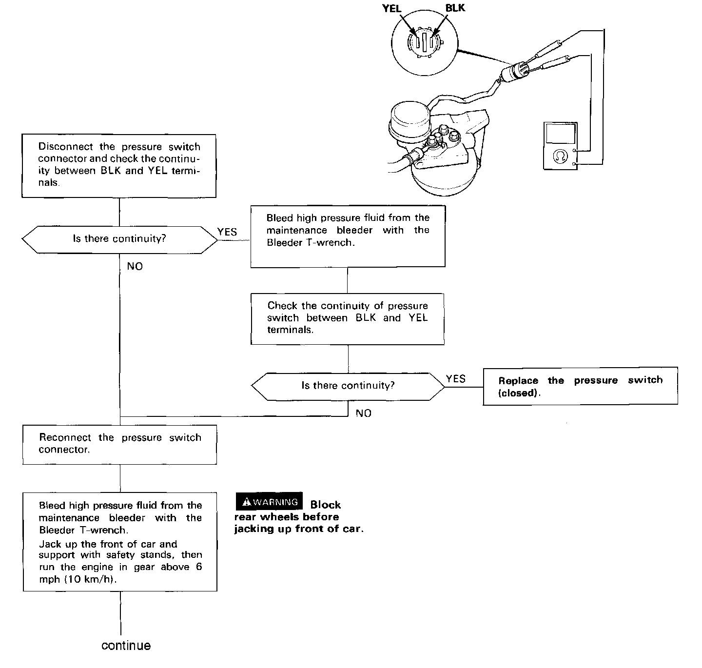
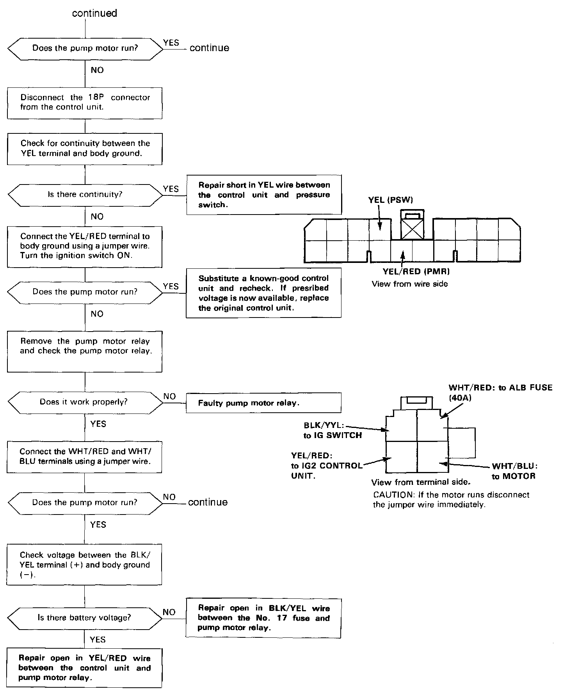
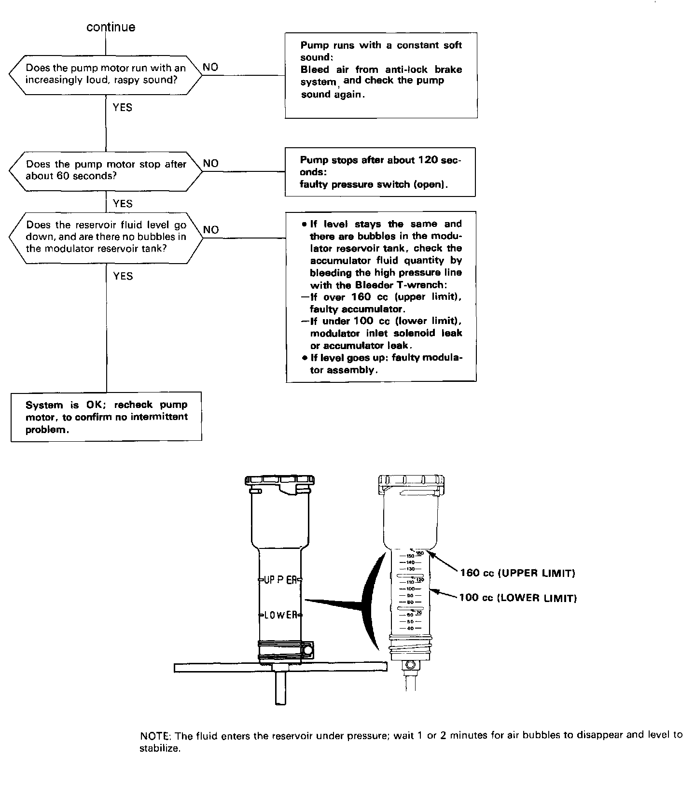
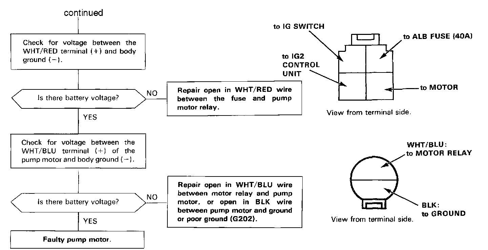

DTC 1




Problem Code 1: Hydraulic Controlled Components.
CAUTION: Use only the digital multimeter to check the system.
NOTE: The LED does not blink when the following failures occur.
- The contact points of the motor relay remain closed (the motor runs continuously even after the ignition key is removed).
- YEL/RED wire is shorted or the control unit is internally shorted (the motor stops when the ignition switch is turned off).
Pre-test steps:
- Check ALB (40A) Fuse.
- Check all brake system hoses and pipes (low and high pressure) for signs of leaking, bending or kinking. Check reservoir fluid level, and if necessary. fill to the MAX level.